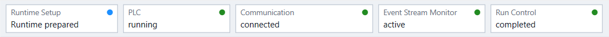
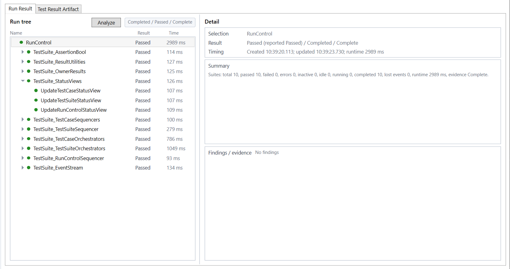
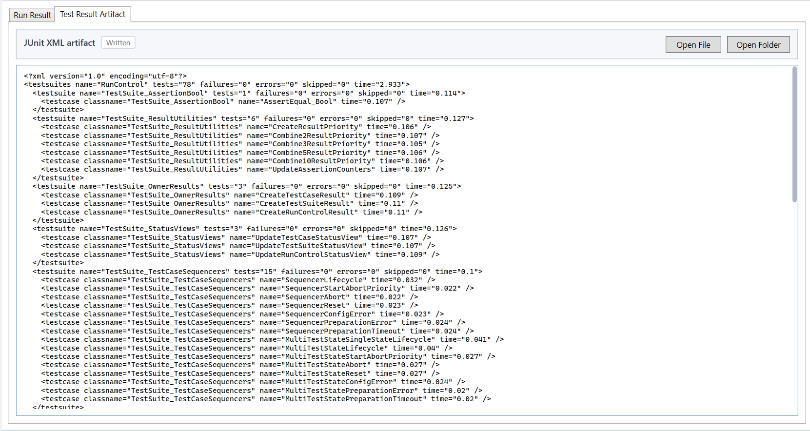

Execution sequence
After setup reaches Step 4, operate the session in the following order. Button availability follows observed state and communication readiness; it is not inferred only from commands sent by this application.

PLC operating state
Use Start PLC when the selected PLC is stopped. The command result only reports whether the profile could request the operation. The PLC badge changes from profile-published runtime observations.
A PLC started or stopped externally, for example through engineering software, follows the same observation path. Stop PLC closes UnitTest communication before or while the PLC leaves the running state.
UnitTest communication
When the profile observes an executable running PLC, it establishes the shared UnitTest communication session. Communication, Event Stream Monitor, and Run Control become usable independently as their evidence arrives.

Do not start a UnitTest solely because the PLC badge is green. Run Control must also report a state that permits the requested command.
UnitTest controls
- Start
- Requests a new RunControl epoch when the PLC reports idle and ready.
- Abort
- Requests controlled interruption of an active run. The final aborted outcome is derived from PLC evidence.
- Reset
- Requests return to idle and ready. Reset remains a recovery command where the profile permits it.
- Reset Event Buffer
- Requests that the PLC discard retained EventBuffer data. This is separate from resetting the UnitTest RunControl. PC-side run evidence is retained; an interrupted active observation is marked incomplete. Command acceptance does not prove that the buffer is clean: subsequent PLC observations establish that state. Observe the selected PLC framework's restrictions on when this operation is valid.
Command acceptance and observed reaction are monitored separately. Fast PLC execution may skip intermediate states between observation cycles; trusted RunControl event anchors and final evidence define the run.
Run results and artifacts
Run Result shows the reconstructed hierarchy, outcomes, timing, summary, and evidence completeness.
If the PLC reports lost events, the Event Stream Monitor remains active but shows a warning state. The Run Result identifies the lost-event count and incomplete evidence; a new UnitTest run remains blocked until the EventBuffer has been reset and observed clean.

Test Result Artifact shows the generated JUnit XML and provides direct access to the file and its folder.

Repeated runs and runtime reconnect
Reset as required by the PLC-side UnitTest implementation, then start another run. A new run replaces the current Run Result and artifact view but does not clear Output or Diagnostics.
Use Reset Event Buffer when lost-event evidence persists. Wait until monitoring reports a clean EventBuffer before starting another run. This operation does not replace a normal UnitTest Reset.
Reconnect Runtime rebuilds runtime and UnitTest communication for the retained target. It does not rediscover, build, transfer, reprovision, delete, or issue PLC start/stop commands. Use it after a communication fault when the prepared runtime target remains valid.